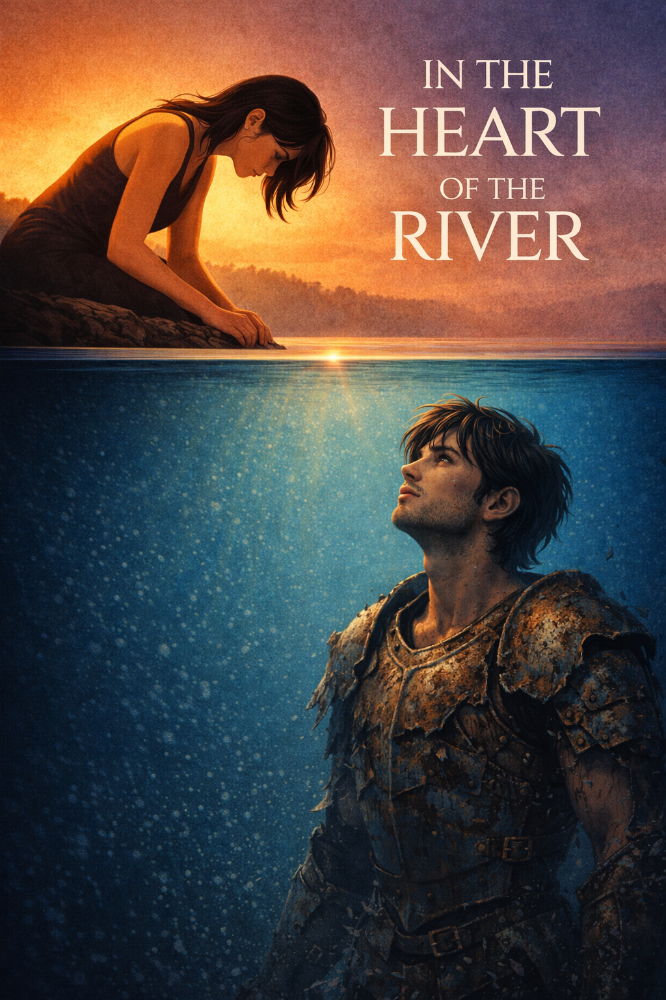

In Progress
Projects currently in development, research, or early drafting.

In the Heart of the River
Caught in the tides of the remembrance of his vengeful past and the sullenness of a solemn waning the the spirit of a once great river takes special notice of Bryn, a girl trampling through him.
Published on Royal Road.